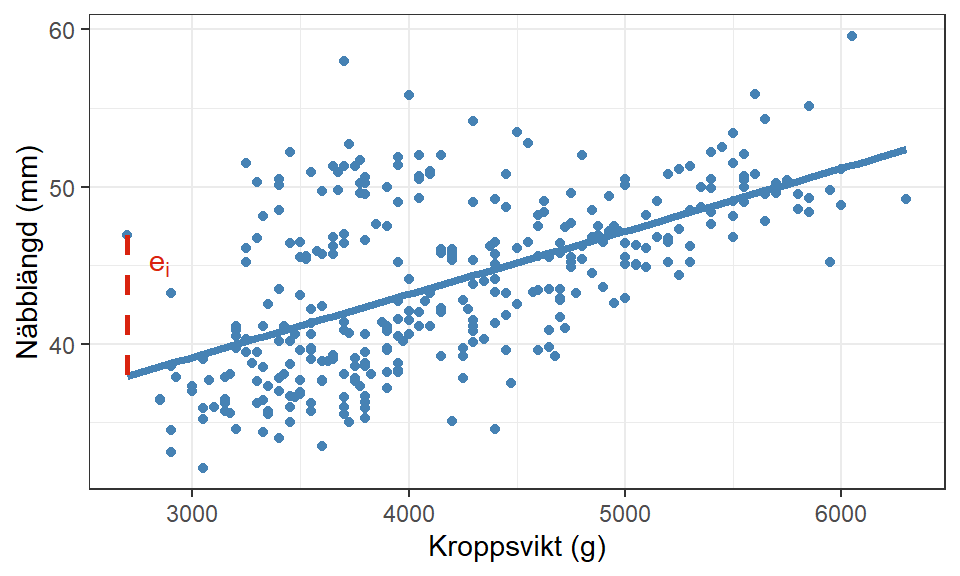

3 Modellanpassning
Efter att ha sammanställt iaktaggelser från visualiseringar och beskrivande statistik, är nästa steg i processen att bygga modellens struktur. Det enklaste är att börja med de kvantitativa variablerna som (vanligtvis) endast kräver en term vardera i modellen.
\[ \text{näbblängd} = \beta_0 + \beta_1 \cdot \text{kroppsvikt} + \beta_2 \cdot \text{fenlängd} + \beta_3 \cdot \text{näbbredd} + \cdots + E \tag{3.1}\]
Oavsett om modellen innehåller en eller flera förklarande variabler behöver vi alltid ha i åtanke de fem antaganden som presenterades i Avsnitt 1.2 framförallt antagandet om linjäritet. Har vi upptäckt icke-linjära samband i de parvisa visualiseringarna räcker det oftast inte med att inkludera en term i modellen. Detta kommer vi återkomma till i ?sec-komplex-modell.
3.1 Indikatorvariabler
En regressionsmodell kan inte hantera kvalitativa variabler direkt, exempelvis \(\beta_4 \cdot \text{art}\), då variabelns värden beskriver kategorier inte värden från en numerisk skala. Detta gäller även om den kvalitativa variabeln är kodad numerisk. En lutningsparameter beskriver den konstanta förändring i responsvariabeln när den tillhörande förklarande variabeln ökar med en enhet, men en kvalitativ variabel har oftast ingen enhet och inte heller konstanta förändringar mellan intilliggande värden. Istället måste vi transformera den kvalitativa variabeln numerisk genom indikatorvariabler (även kallad dummyvariabler).
Som namnet antyder används indikatorvariabler för att indikera vilken kategori en observation har uppmätt på den kvalitativa variabeln. Vi behöver då skapa en begränsad mängd indikatorvariabler som på ett tydligt sätt visar exakt en kategori per observation.
Anta att en kvalitativ variabel har 3 kategorier: \[ \begin{bmatrix}A\\B\\C\end{bmatrix} \] Vi kan börja med att skapa en indikatorvariabel för kategori A som antar värdet 1 om observationen har uppmätt kategorin, 0 annars:
\[ \begin{bmatrix}A\\B\\C\end{bmatrix} = \begin{bmatrix}1\\0\\0\end{bmatrix} \] Med endast en indikatorvariabel kan vi inte tydligt identifiera om en observation har uppmätt kategori B eller C då de båda har värdet 0, så vi lägger till ytterligare en indikator som antar värdet 1 om observationen uppmätt kategori B, 0 annars:
\[ \begin{bmatrix}A\\B\\C\end{bmatrix} = \begin{bmatrix}1 & 0\\0 & 1\\0 & 0\end{bmatrix} \] Nu skulle det vara lätt att fortsätta, att skapa en indikatorvariabel även för den sista kategorin, men det behövs inte. Om båda indikatorvariablerna är 0 har vi lyckats identifiera att observationen uppmätt kategori C och ytterligare en variabel är bara onödig information.
Den sista kategorin blir också vår referenskategori, den kategori som de andra indikatorvariablernas effekter tolkas gentemot. När vi tolkar lutningsparametrar för indikatorvariabler, till exempel indikatorvariabeln för A, mäts förändringen i \(Y\) när \(X = A\) jämfört med när \(X = C\).
Viktigt
Rent matematiskt kommer tre indikatorvariabler modellera ett perfekt samband och skapa problem med singularitet i beräkningarna.
Generellt skapas \(\text{antal kategorier} - 1\) indikatorvariabler för varje kvalitativa variabel som ska inkluderas i en regressionsmodell. Valet av referenskategori för respektive är godtyckligt, men vanligtvis används den första eller sista kategorin för detta ändamål.
För att slutföra modelleringen av Ekvation 3.1 ska vi inkludera Art och Kön i modellen. Då behöver vi skapa två respektive en indikatorvariabel enligt:
\[\begin{align*} Gentoo &= \begin{cases} 1 \qquad \text{om art Gentoo}\\ 0 \qquad \text{annars} \end{cases}\\ Chinstrap &= \begin{cases} 1 \qquad \text{om art Chinstrap}\\ 0 \qquad \text{annars} \end{cases} \end{align*}\]
och
\[\begin{align*} hane &= \begin{cases} 1 \qquad \text{om hane}\\ 0 \qquad \text{annars} \end{cases} \end{align*}\]
för att till slut skapa följande modell:
\[ \text{näbblängd} = \beta_0 + \beta_1 \cdot \text{kroppsvikt} + \beta_2 \cdot \text{fenlängd} + \beta_3 \cdot \text{näbbredd} + \beta_4 \cdot \text{Gentoo} + \beta_5 \cdot \text{Chinstrap} + \beta_6 \cdot \text{hane} + E \tag{3.2}\]
där Adelie och honor agerar referenskategori för respektive kvalitativ variabel.
3.2 Modellanpassning
Ekvation 3.2 visar den sanna modell som utgår ifrån populationens alla observerade värden, men nästintill alla undersökningar utgår från någon form av urval. Även en totalundersökning under en viss period kan anses vara ett urval i tiden om modellen avses att användas efter undersökningsperioden är slutförd.
Vi kan beteckna den anpassade modellen med dess skattade parametrar enligt:
\[ \hat{y}_i = b_0 + b_1 \cdot x_{1i} + b_2 \cdot x_{2i} + b_3 \cdot x_{3i} + b_4 \cdot x_{4i} + b_5 \cdot x_{5i} + b_6 \cdot x_{6i} \tag{3.3}\] där \[\begin{align*} \hat{y}_i &= \text{responsvariabelns skattade värde för observation i}\\ b_0 &= \text{skattning av interceptet}\\ b_1 - b_6 &= \text{skattning av lutningsparametrar} \end{align*}\]
Notera
Viss litteratur använder \(\hat{\beta}\) som beteckning för skattade parametrar.
Modellen anpassas med hjälp av minsta kvadratskattningen (eng. Ordinary Least Squares, OLS), där syftet är att minimera modellens totala fel. Vi kan notera att Ekvation 3.3 saknar feltermen \(E\) som inkluderas tidigare, vilket kommer från att den anpassade modellen endast består av regressionslinjen. Kom ihåg att en regressionsmodell ämnar att ge en förenkling av verkligheten. Men \(E\) beskrev ju felet i modellen och om vi ska minimera det totala felet behöver vi på något sätt ta hänsyn till denna term i modellanpassningen.
Anta att vi anpassar en modell enbart på kroppsvikt och näbblängd. Om vi skulle projicera den anpassade enkla linjära modellen i ett spridningsdiagram över de två variablerna (Figur 3.1) skulle linjen inte lyckas träffa alla punkter exakt, varje enskilda observation kommer ligga ett visst avstånd från regressionslinjen. Detta avstånd är observationens residual som betecknas med \(e_i\).
Matematiskt beräknar vi \(e_i = Y_i - \hat{Y}_i\), där \(Y_i\) är det observerade värdet (punkten) och \(\hat{Y}_i\) är modellens anpassade värde (linjen). Minsta kvadratskattningen beräknar modellens alla parametrar så att det totala felet (Sum of Squares of Error, SSE) för alla residualer blir så litet som möjligt.
\[ SSE = \sum_{i = 1}^n e_i^2 = \sum_{i = 1}^n (Y_i - \hat{Y}_i)^2 \tag{3.4}\]
I en enkel linjär regression går det att härleda fram analytiska lösningar för de två parameterskattningarna, \(b_0\) och \(b_1\), som minimerar SSE men så fort vi inkluderar flera variabler blir detta betydligt svårare. Istället förlitar vi (och R) oss på matrisberäkningar som presenteras mer i Avsnitt 3.3.
Viktigt
Formler för parameterskattningarna i en enkel linjär regression är: \[\begin{align*} b_1 &= \frac{\sum_{i=1}^n(X_i - \bar{X})(Y_i - \bar{Y})}{\sum_{i=1}^n(X_i - \bar{X})^2}\\ b_0 &= \bar{Y} - b_1 \cdot \bar{X} \end{align*}\]
\(b_1\) kan också omformuleras till beräkningsformeln: \[ \begin{aligned} \frac{\sum_{i=1}^n(X_i \cdot Y_i) - \frac{\sum_{i=1}^nX_i \cdot \sum_{i=1}^nY_i}{n}}{\sum_{i=1}^nX_i^2 - \frac{(\sum_{i=1}^nX_i)^2}{n}} \end{aligned} \]
Vi kan också använda den anpassade modellen för att prediktera nya värden på responsvariabeln för nya observationer. Från den anpassade regressionslinjen byter vi ut respektive variabel med observationens faktiska värde och får till slut en enkel summa som beskriver responsvariabelns värde på linjen. Mer om hur prediktioner används i relation till populationen tas upp i Avsnitt 5.4.
3.2.1 Modellanpassning i R
För att anpassa en linjär regressionsmodell i R används funktionen lm() med följande argument:
formula: modellens struktur som ett formelobjektdata: datamaterialet som variablerna hittas
Ett formelobjekt är ett speciellt format som R använder för att beskriva relationen mellan variabler. Generellt anges formatet som y ~ x där x består utav de olika förklarande variablerna, till exempel bill_length_mm ~ body_mass_g + bill_depth_mm. Det finns ett kortkommando (~ .) som används i exemplet nedan, där alla övriga variabler inkluderas i högerledet , men det kräver att vi först har ett datamaterial enbart bestående av de förklarande variablerna från Ekvation 3.2.
Vi måste också se till att alla variabler i datamaterialet har rätt variabeltyp som vi förväntar oss. Vi identifierade i Avsnitt 2.1 att vi hade tre kvantitativa variabler och två kvalitativa variabler som i R motsvarar typerna numeric och Factor. Att använda sig av Factor underlättar transformationen till indikatorvariabler eftersom R vet att den måste göra så för att modellen ska fungera. Om de kvalitativa variablerna var av typen character eller kodad numeric är det inte säkert att R skapar indikatorvariabler. Vi kan undersöka variabeltyperna för penguins med hjälp av str().
# Tar endast med de variabler som vi ansåg ha ett samband med responsvariabeln
modelData <-
penguins %>%
select(
bill_length_mm,
body_mass_g,
flipper_length_mm,
bill_depth_mm,
species,
sex
)
# Anpassar angiven modell
simpleModel <- lm(formula = bill_length_mm ~ ., data = modelData)Med summary() får vi en detaljerad utskrift för modellen som inkluderar de anpassade regressionskoefficienterna. Vid presentation av en sådan utskrift kan vi använda kable() eller xtable() för att få en snyggare utskrift.
Visa kod
summary(simpleModel)
Call:
lm(formula = bill_length_mm ~ ., data = modelData)
Residuals:
Min 1Q Median 3Q Max
-7.3939 -1.3424 -0.0421 1.2695 11.4274
Coefficients:
Estimate Std. Error t value Pr(>|t|)
(Intercept) 1.502e+01 4.374e+00 3.433 0.000674 ***
body_mass_g 1.084e-03 4.231e-04 2.562 0.010864 *
flipper_length_mm 6.856e-02 2.315e-02 2.961 0.003293 **
bill_depth_mm 3.130e-01 1.541e-01 2.032 0.043000 *
speciesChinstrap 9.566e+00 3.497e-01 27.351 < 2e-16 ***
speciesGentoo 6.404e+00 1.030e+00 6.215 1.56e-09 ***
sexmale 2.030e+00 3.892e-01 5.215 3.27e-07 ***
---
Signif. codes: 0 '***' 0.001 '**' 0.01 '*' 0.05 '.' 0.1 ' ' 1
Residual standard error: 2.217 on 326 degrees of freedom
Multiple R-squared: 0.8386, Adjusted R-squared: 0.8356
F-statistic: 282.3 on 6 and 326 DF, p-value: < 2.2e-16Visa kod
summary(simpleModel) %>%
coef() %>%
as_tibble(rownames = NA) %>%
rownames_to_column() %>%
rename(
` ` = rowname,
Skattning = Estimate,
Medelfel = `Std. Error`,
`t-värde` = `t value`,
`p-värde` = `Pr(>|t|)`
) %>%
kable(
digits = 4
) %>%
kable_styling("striped")| Skattning | Medelfel | t-värde | p-värde | |
|---|---|---|---|---|
| (Intercept) | 15.0166 | 4.3742 | 3.4330 | 0.0007 |
| body_mass_g | 0.0011 | 0.0004 | 2.5617 | 0.0109 |
| flipper_length_mm | 0.0686 | 0.0232 | 2.9608 | 0.0033 |
| bill_depth_mm | 0.3130 | 0.1541 | 2.0316 | 0.0430 |
| speciesChinstrap | 9.5655 | 0.3497 | 27.3508 | 0.0000 |
| speciesGentoo | 6.4044 | 1.0304 | 6.2154 | 0.0000 |
| sexmale | 2.0297 | 0.3892 | 5.2153 | 0.0000 |
Tip 3.1
För att skapa denna snygga utskrift av koefficienterna behöver vi plocka ut en enskild del av summary() med hjälp av coef(). I dokumentationen för lm() finns mer information om vad som kan hämtas från det resulterande regressionsobjektet.
R är ett objektorienterat programmeringsspråk, och funktionen lm() returnerar ett objekt av klassen ”lm”, vilket är en lista. Det är enkelt att plocka önskade delar från den listan vid behov. Det finns en mängd funktioner kopplade till objekt av klassen ”lm”:
coef(): Ger regressionskoefficienterresiduals(): Ger residualernafitted(): Ger de anpassade värdena (\(\hat{Y}\))summary(): Ger en sammanfattande analys av regressionsmodellen. Funktionen returnerar ett objekt av klassen ”summary.lm”. Se?summary.lmi dokumentationen. coef() funkar även på dessa objekt som vi såg ovan.anova(): Ger ANOVA-tabellen för modellenpredict(): gör prediktioner för (nya) x-värden, alltså beräknar \(\hat{Y}\) för givna x-värden. Kan även beräkna konfidensintervall och prediktionsintervall för \(\hat{Y}\). Se?predict.lm()för detaljer.plot(): Ger olika diagnostiska plottar, se?plot.lmför detaljer.confint(): Beräknar konfidensintervall för regressionskoefficienternamodel.matrix(): skapar olika typer av designmatriser som kan användas ilm(), se Avsnitt 3.3.
Det är också användbart att använda str() på lm-objekt. Kolla i ?lm() under Value rubriken för att se vilka olika delar som finns i objektet.
Tabell 3.1 visar de skattade lutningsparametrarna (koefficienterna). Exempelvis kan vi se att för varje gram mer en pingvin väger ökar näbbens längd med ca 0.0011 mm i genomsnitt givet att alla andra variabler hålls konstanta. Den sista delen av denna tolkning är viktig att inkludera då en förändring av flera variabler skulle medföra en annan förändring av responsvariabeln i relation till respektive koefficient.
Indikatorvariablerna tolkas inom sin grupp jämfört med referenskategorin, till exempel har Gentoo-pingviner i genomsnitt en 6.4 mm större näbblängd än referenskategorin Adelie-pingviner givet att alla andra variabler hålls konstanta.
Interceptet är endast relevant att tolka om värdemängden är alla 0, det vill säga att data täcker det område där alla förklarande variabler antar värdet 0. I just detta exempel finns det inte data över dessa områden vilket medför att värdet på interceptet inte har någon rimlig tolkning.
Viktigt
Även om tolkningen av interceptet inte blir rimlig måste interceptet inkluderas i modellanpassningen för att minsta kvadratskattningen ska minimera SSE. Om interceptet hade plockats bort motsvarar det en linje som tvingas att korsa y-axeln vid \(y = 0\) vilket resulterar i att modellen inte beskriver de fenomen som vi vill att den ska beskriva.
Det är inte bara koefficienttabellen som är relevant att titta på i en modellanpassning och vi kommer tillbaka till de andra objekten som finns inuti lm senare.
3.3 Matrisberäkningar
Matriser underlättar de tunga beräkningar som krävs för att anpassa en regressionsmodell med flera förklarande variabler. Vi kan formulera en regressionsmodell i matrisform enligt: \[ \mathbf{Y} = \mathbf{X} \boldsymbol{\beta} + \mathbf{E} \tag{3.5}\] där, \[ \mathbf{Y} = \underset{n \times 1}{\begin{bmatrix}Y_1\\Y_2\\\vdots\\Y_n\end{bmatrix}} \quad \mathbf{X} = \underset{n \times p}{\begin{bmatrix}1 & X_{11} & X_{12} & \cdots & X_{1k}\\1 & X_{21} & X_{22} & \cdots & X_{2k}\\\vdots & \vdots & \vdots & \ddots & \vdots\\1 & X_{n1} & X_{n2} & \cdots & X_{nk}\end{bmatrix} } \quad \boldsymbol{\beta} = \underset{p \times 1}{\begin{bmatrix}\beta_0\\\beta_1\\\vdots\\\beta_k\end{bmatrix}} \quad \mathbf{E} = \underset{n \times 1} {\begin{bmatrix}E_1\\E_2\\\vdots\\E_n\end{bmatrix}} \] \(\mathbf{X}\) kallas för designmatrisen och innehåller alla \(k\) förklarande variabler, en kolumn för varje, samt en första kolumn med 1:or som motsvarar interceptet. Indikatorvariabler adderar till antalet förklarande variabler trots att de utgår ifrån samma kvalitativa variabel, se Ekvation 3.2 där vi totalt har 6 förklarande variabler. \(p\) beskriver antalet parametrar, motsvarande \(k + 1\) antalet lutningsparametrar + interceptet, och \(n\) är antalet observationer.
Skattningen av \(\hat{\boldsymbol{\beta}}\) minimerar fortfarande SSE där: \[ SSE = (\mathbf{Y} - \mathbf{X}\boldsymbol{\hat{\beta}})'(\mathbf{Y}-\mathbf{X}\boldsymbol{\hat{\beta}}) \tag{3.6}\]
och \[ \boldsymbol{\hat{\beta}} = (\mathbf{X}'\mathbf{X})^{-1}\mathbf{X}'\mathbf{Y} \tag{3.7}\]
3.3.1 Matriser i R
R använder sig av matriser i bakgrunden när vi använder lm() men vi kan också skapa våra egna utifrån datamaterialet och genomföra matrisberäkningen för \(\boldsymbol{\hat{\beta}}\) eller SSE.
Designmatrisen är den mest komplexa att skapa, speciellt om vi har kvalitativa variabler med i data, men som tur är kan vi använda samma formelobjekt i funktionen model.matrix().
X <-
model.matrix(
bill_length_mm ~ .,
data = modelData
)
# Visar de första fem raderna i matrisen
X[1:5,] (Intercept) body_mass_g flipper_length_mm bill_depth_mm speciesChinstrap
1 1 3750 181 18.7 0
2 1 3800 186 17.4 0
3 1 3250 195 18.0 0
4 1 3450 193 19.3 0
5 1 3650 190 20.6 0
speciesGentoo sexmale
1 0 1
2 0 0
3 0 0
4 0 0
5 0 1Y <-
modelData$bill_length_mm %>%
as.matrix()
# Visar de första fem raderna i vektorn
Y[1:5,][1] 39.1 39.5 40.3 36.7 39.3De fem första raderna i respektive matris är transformerade värden från Tabell 2.1 och designmatrisen innehåller indikatorvariabler enligt Ekvation 3.2.
3.3.1.1 Skattning av \(\boldsymbol{\hat{\beta}}\)
Nu kan vi med hjälp av matrisberäkningsformler i R beräkna koefficienterna:
betaHat <- solve(t(X) %*% X) %*% t(X) %*% Y| Koefficient | |
|---|---|
| (Intercept) | 15.0166 |
| body_mass_g | 0.0011 |
| flipper_length_mm | 0.0686 |
| bill_depth_mm | 0.3130 |
| speciesChinstrap | 9.5655 |
| speciesGentoo | 6.4044 |
| sexmale | 2.0297 |
Tabell 3.2 visar samma parameterskattningar som Tabell 3.1, eftersom det är samma beräkningar som genomförts. Vi ser dock fler värden i den tidigare tabellen vilket uppkommer från att lm() omfattar fler beräkningar som sedan sammanställs i ett och samma objekt.
Till exempel beräknas även prediktioner och residualer, vilket vi också kan göra med matrisberäkningar enligt:
Yhat <- X %*% betaHat
e <- Y - Yhat3.3.1.2 Kovariansmatris för \(\boldsymbol{\hat{\beta}}\)
Variansen för respektive parameter kan också beräknas med matriser, där medelfelet är roten ur diagonalelementen från kovariansmatrisen. \[ s^2_{\boldsymbol{\hat{\beta}}} = (\mathbf{X}'\mathbf{X})^{-1}MSE \] där MSE är \(\frac{SSE}{n - (k + 1)}\).
Då beräkningen av SSE och MSE utgår från matriser kommer även deras objekt vara en \(1 \times 1\) matris, men i beräkningen av kovariansmatrisen är MSE endast en skalär. Vi behöver därför explicit ange att MSE inte längre är en matris för att undvika problem med matrisdimensioner.
# Beräknar SSE
SSE <- t(Y - Yhat) %*% (Y - Yhat)
# Beräknas MSE
MSE <- SSE / (nrow(X) - ncol(X))
# Beräknar kovariansmatrisen för Beta
s2Beta <- solve(t(X) %*% X) * as.numeric(MSE)| Medelfel | |
|---|---|
| (Intercept) | 4.3742 |
| body_mass_g | 0.0004 |
| flipper_length_mm | 0.0232 |
| bill_depth_mm | 0.1541 |
| speciesChinstrap | 0.3497 |
| speciesGentoo | 1.0304 |
| sexmale | 0.3892 |
Vi ser även i Tabell 3.3 samma värden som Tabell 3.1.
3.4 Övningsuppgifter
Vi kommer återigen använda datamaterialet marketing.
Anpassa en linjär regressionsmodell med
lm()som inkluderar de variabler som du valt ut i Avsnitt 2.4.Sammanställ en tabell över de skattade koefficienterna och tolka respektive.
Skapa designmatrisen och en matris för responsvariabeln och skatta lutningsparametrarna med hjälp av dessa. Kontrollera att du får samma värden som i tabellen från
lm().Använd matrisberäkningar för att beräkna medelfelet för respektive parameter.